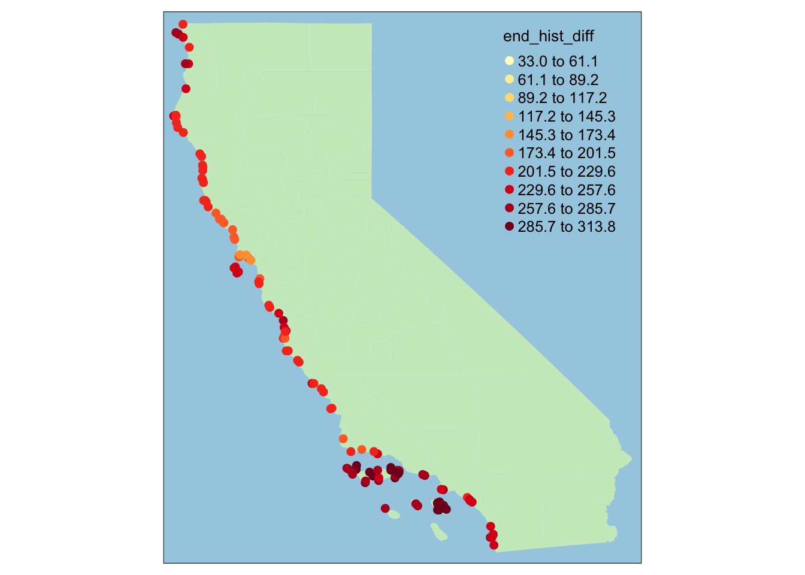
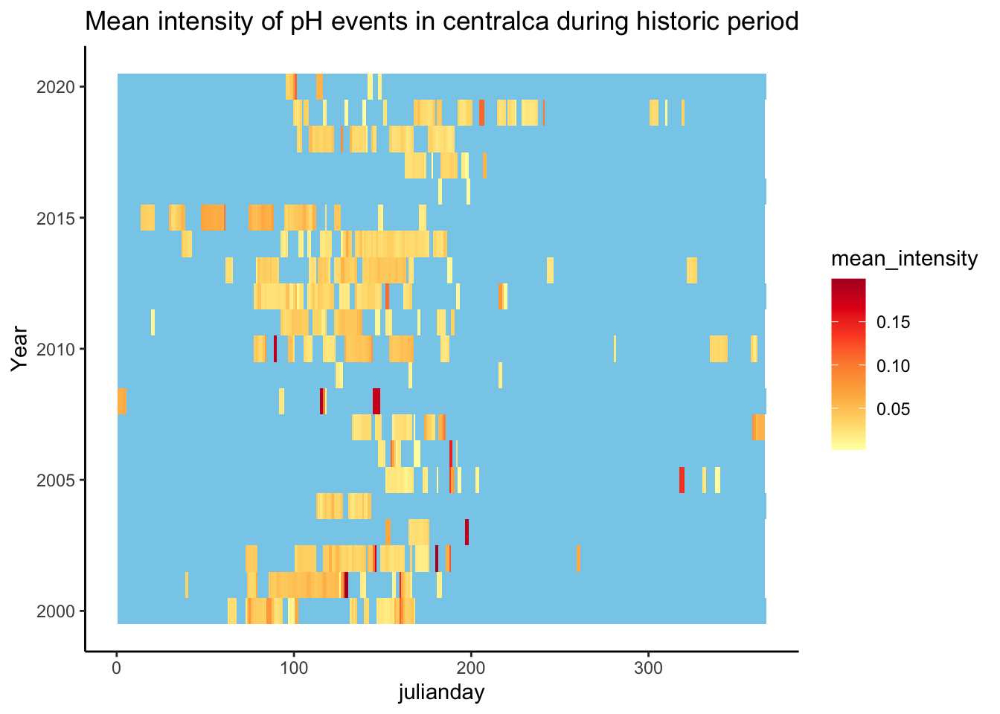
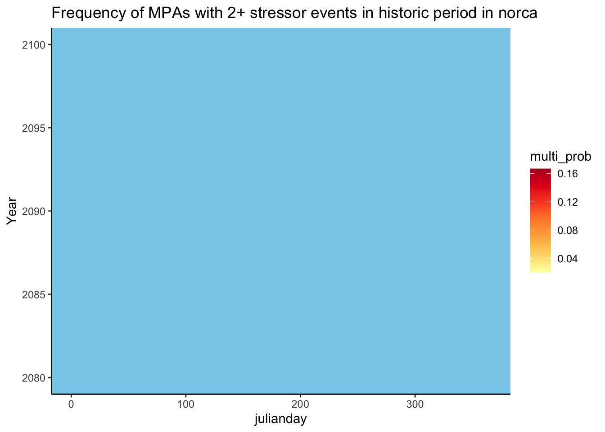
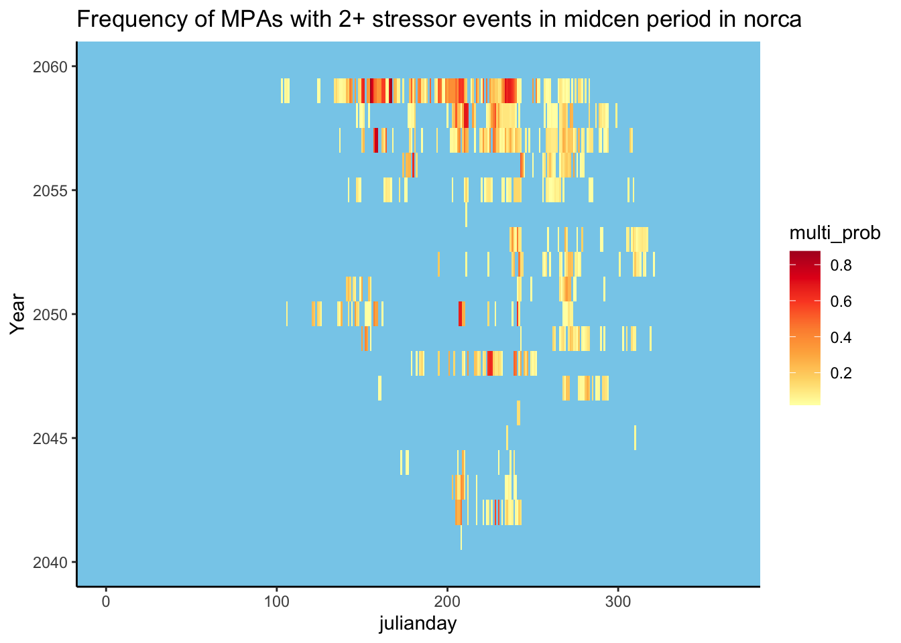

Interpretation of Results: Exposure of CA MPAs to Future Climate
Importance of understanding MPA exposure to future change
MPAs are an important tool for protection of habitats, but little is known about how they will protect habitats in a changing climate. Many ecological principles and societal concerns informed the establishment of California’s MPA network (Gleason et al., 2013). For example, sites were chosen to represent important nearshore habitats, such as kelp forests, and ensure connectivity between populations (Gleason et al., 2010). However, at the time of establishment little research was available on the geographic variability in exposure of MPAs to climate stressors. Theory indicates MPAs may aid in climate resilience as they support larger-bodied individuals that may better withstand climate stress and robust populations due to high gene flow from connectivity (Hamilton et al., 2023). However, without knowing what climate conditions are expected in the future, it is difficult to predict how well MPAs will protect habitats.
Characterizing exposure of future warming/acidification/deoxygenation:
The spatio-temporal landscape of the CA coast is highly variable due to complex interplay of physical and biogeochemical processes like upwelling, creating a mosaic of temperature, pH, and dissolved oxygen conditions (Kroeker et al., 2023). As warming, ocean acidification, and deoxygenation accelerate, MPAs will be exposed to unique stressor magnitudes and combinations. There is no “one size fits all strategy” to predicting effects of climate change in MPAs as the CA network spans such highly multivariate environmental conditions - one MPA may experience very different conditions to another. Thus, it is important to understand whether future environmental change will overlay onto current patterns of variability in CA, or whether new sites of vulnerability may emerge in the future to better contextualize the efficacy of MPAs.
How do stressor-associated variables (T, pH, and DO mean, standard deviation, and lower/upper 10th percentile) drive the spatial clustering of regions in CA, and how will these patterns change in the future?
Mean conditions and variation in conditions (within and across regions) remain similar from the historical time through mid-century time period. By the end-of-century, Northern CA and Central CA become more distinctly clustered, with less overlap with other regions, whereas Southern CA and the Channel Islands have more overlap by the end-of-century (Fig. 1 & 2).


Can we predict future spatial trends in stressor-associated variables based on historical trends? What are implications of deviating future trends on MPAs?
A regression analysis, looking at correlations between historical and future-time periods for different summary statistics shows finer-scale spatial trends in summary statistics through time, allowing us to identify MPAs that standout as anomalies, perhaps not following trends of other MPAs in the same region, i.e. a hotspot (above line) or bright spot (below line). Or, understanding which summary statistics can be predicted by present day values, versus those which will behave differently in the future compared to the present.
This analysis shows that future variation in temperature due to the seasonal cycle is not predicted very well by present seasonal variation in temperature as the correlation between time-periods breaks down by the end-of-century.


Other summary statistics for temperature (mean and event-based standard deviation) can be predicted in future time periods fairly well based on historical values. The same is true for means and event/seasonal SD for pH and DO.
Key takeaways:
Patterns driving regional clustering stay mostly the same from historic till end-of-century time periods
Most future summary statistic values can be predicted by historical values. However,
- temperature seasonal variation either breaks down, or follows new patterns by the end-of-century
Considering a different metric of exposure: anomalous events
Since organismal vulnerability to climate change can differ (i.e. mean conditions may be stressful for some, whereas frequent anomalous events may be stressful to others) we characterize exposure of MPAs to future climate change representing various measures of vulnerability.
Previously we explored spatio-temporal trends in stressor-associated variables by looking at their means and standard deviations. Here we explore trends in anomalous events. An “event” is two or more days where a threshold is crossed. The threshold for pH is 7.75, and the threshold for is 4.6. Temperature does not have a hard threshold like pH and DO as organisms typically respond to changes in temperature according to relative normals. The temperature threshold used for this analysis is the historical climatology’s temp for a given month + 2* the historical climatology SD.
How does the number of events experienced in a year change within/across regions between time periods
To understand how the number of events in a year changes with time, we represent the change in number of events between time periods in the following maps. Maps are shown only for temperature, though similar trends were seen for pH and DO.



Some sites within regions (specify which sites) experience more anomalous events in a year than others in the region, but the progression follows the same spatial mosaic as the historical time period. The change in number of anomalous events increases more so between mid-century and end-century periods, rather than historical and mid-century periods.
How does the intensity of events vary across regions? Taking a finer temporal scale (but coarser spatial scale) approach by looking at events across years
Here we represent the intensity of events on an event scale, averaged over all MPAs within the region. The shading represents the intensity of an event, which is the threshold value minus the event mean. Note: scale bars are not fixed across periods. Figures are only shown for pH in Central CA.



How does exposure to multiple stressors change across regions through time?
Since multiple stressors will co-occur, it is important to consider exposure to multiple simultaneous events.
::: {#layout-ncol = "3"} 

 :::
:::
There is low to no co-occurrence of stressors (any combination of pH, T, or DO events) in historical time periods, few occurrences in northern CA in mid century (and low or none in other regions), and extremely high occurrences across regions in the end century time period.